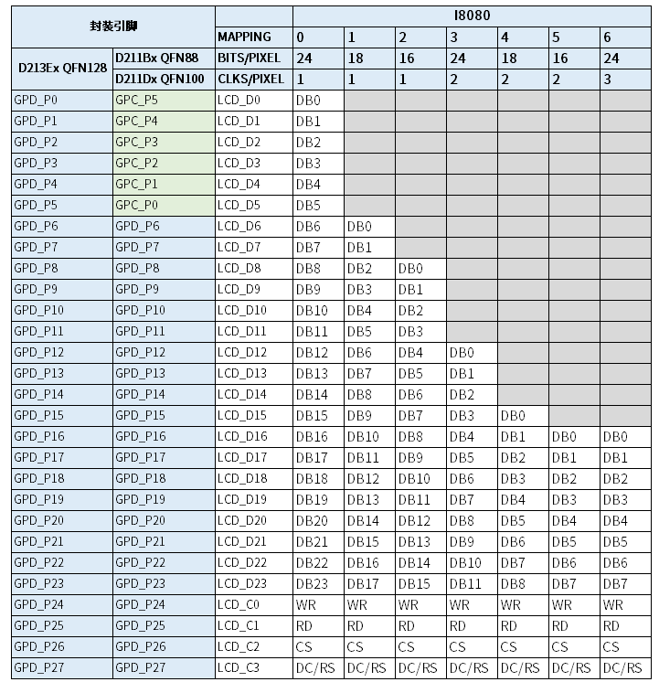
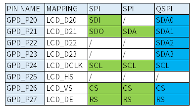

MIPI-DBI
16 May 2025
Read time: 3 minute(s)
本节介绍了开发一款新的 ArtInChip MIPI-DBI 屏驱动的流程，以确保驱动能够正确初始化并工作。
ArtInChip 平台支持以下 MIPI-DBI 类型：
- Type C: SPI
- Type B: I8080
MIPI-DBI 屏幕通常需要初始化，调试时需根据屏厂提供的资料，开发一款专用的驱动。开发步骤如下：
- 新增一款屏驱动。
根据屏幕的接口类型（Type B: I8080 或 Type C: SPI），从现有的参考文件中复制代码。
- Type B I8080 接口可参考：panel_dbi_st7789.c
- Type C SPI 接口可参考：panel_dbi_st7789t3.c
-
将新文件重命名为 panel_dbi_xxx.c，其中 xxx 为屏驱 IC 型号。
例如，屏驱 IC 型号为 st77903，则新文件名称为 panel_dbi_st77903.c。以下均以 st77903 屏驱 IC 型号为例。
- 注册新驱动文件。
- 修改 bsp/artinchip/drv/display/panel/Kconfig
文件，添加配置项，让新驱动在 menuconfig
界面可见：
config AIC_PANEL_DBI_ST77903 bool "ArtInChip MIPI DBI ST77903 panel" depends on AIC_DISP_MIPI_DBI - 修改 bsp/artinchip/SConscript
文件，添加编译规则：
if GetDepend('AIC_PANEL_DBI_ST77903): src += Glob('drv/display/panel/panel_dbi_st77903.c')
- 修改 bsp/artinchip/drv/display/panel/Kconfig
文件，添加配置项，让新驱动在 menuconfig
界面可见：
- 注册新 struct aic_panel 结构体。
- 修改 panel_dbi_st77903.c 的 struct aic_panel 命名，重命名为 dbi_st77903。
- 在 panel_com.h 中添加
extern struct aic_panel dbi_st77903：// panel_com.h extern struct aic_panel dbi_xxx; - 将 dbi_st77903 添加到 panel_com.c 文件的 panels[]
指针数组中：
// panel_com.c static struct aic_panel *panels[] = { ... #ifdef AIC_PANEL_DBI_st77903 &dbi_st77903, #endif };
- 设置屏幕时序和接口参数。
- 修改 struct display_timing 结构体，根据 LCD
屏幕规格书修改时序参数。
static struct display_timing st77903_timing = { .pixelclock = 130000000, .hactive = 1080, .hfront_porch = 160, .hback_porch = 160, .hsync_len = 40, .vactive = 1920, .vfront_porch = 10, .vback_porch = 20, .vsync_len = 8, }; - 修改 struct panel_dbi 结构体，根据 LCD
屏幕规格书修改显示接口类型并添加初始化命令。
static struct panel_dbi dbi = { .type = SPI, .format = SPI_4LINE_RGB565, .commands = { .buf = st7789t3_commands, .len = ARRAY_SIZE(st7789t3_commands), } };
- 修改 struct display_timing 结构体，根据 LCD
屏幕规格书修改时序参数。
- 在 pinmux.c 文件中添加屏幕引脚，配置屏幕引脚功能。以 demo128-nand 工程为例，在 target/d21x/demo128-nand/pinmux.c 中配置屏幕引脚，根据芯片型号和接口参数添加 MIPI-DBI 信号引脚，配置功能 2：
#ifdef AIC_PANEL_DBI_XXX {2, PIN_PULL_DIS, 3, "PD.16"}, {2, PIN_PULL_DIS, 3, "PD.17"}, {2, PIN_PULL_DIS, 3, "PD.18"}, {2, PIN_PULL_DIS, 3, "PD.19"}, {2, PIN_PULL_DIS, 3, "PD.20"}, {2, PIN_PULL_DIS, 3, "PD.21"}, {2, PIN_PULL_DIS, 3, "PD.22"}, {2, PIN_PULL_DIS, 3, "PD.23"}, {2, PIN_PULL_DIS, 3, "PD.24"}, {2, PIN_PULL_DIS, 3, "PD.25"}, {2, PIN_PULL_DIS, 3, "PD.26"}, {2, PIN_PULL_DIS, 3, "PD.27"}, #endif- Type B I8080 引脚定义如下：
- Type C SPI 引脚定义如下：
- Type B I8080 引脚定义如下：
- 使能新建的 panel 驱动。
在 Luban-Lite 根目录下执行 me，进入 menuconfig 的功能配置界面。
- 选择显示接口类型 Display MIPI-DBI
interface：
Board options ---> [*] Using Display Engine (DE) Display Parameter ---> select Display interface (Display MIPI-DBI interface) ---> - 选择新建的 ArtInChip MIPI DBI panel 驱动，即 ArtInChip MIPI DBI st77903
panel：
Board options ---> [*] Using Display Engine (DE) Display Parameter ---> Display Panels ---> ArtInChip Panel Drivers (ArtInChip MIPI DBI st77903 panel) --->
- 选择显示接口类型 Display MIPI-DBI
interface：